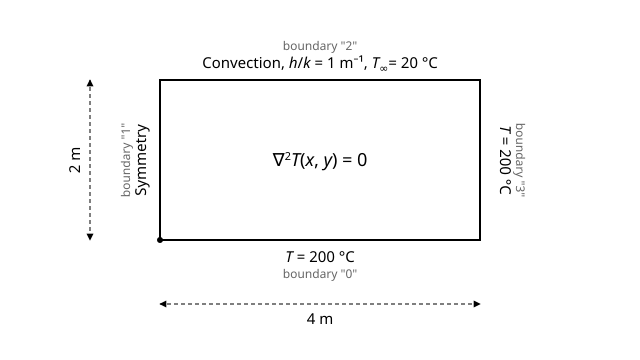
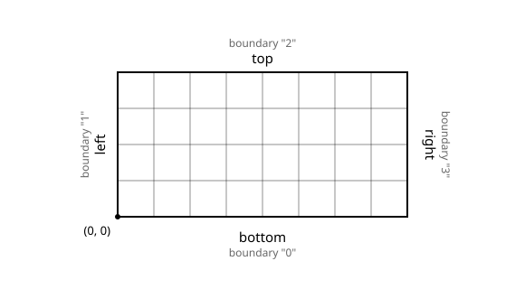

Overview
Heat conduction in a 2D fin.
In this tutorial, we address a stationary heat transfer problem within a two-dimensional rectangular domain. This is a typical cooling fin problem. Cooling fins are commonly used to increase the area available for heat transfer between metal walls and poorly conducting fluids such as air.
Steady heat conduction is described by the Laplace equation: \(\nabla^{2}T(x,y) = 0\), where \(T\) denotes the temperature.

Schematic of the 2D cooling fin: constant temperature (200 °C) at bottom and right edges, symmetry (zero flux) at the left edge, and convection at the top edge (h/k = 1 m⁻¹, external temperature 20 °C)
The above schematic illustrates the problem domain and outlines the associated boundary conditions. The constant temperature boundary conditions are implemented as Dirichlet-type conditions in the finite element code. The symmetry boundary condition is implemented as a Neumann zero-flux type \( \left( \frac{dT}{dx}|_{x=0}=0 \right) \), while the convective cooling boundary condition is a Robin-type condition. Specifically, the latter is expressed as \(\frac{dT}{dy}|_{y=2}=-{\frac{h}{k}}(T-T_0)\), where \(h\) is the heat transfer coefficient, \(k\) the thermal conductivity and \(T_0\) is the external temperature. We assume here that \({\frac{h}{k}}\) = 1 m-1 and \(T_0\) = 20 °C.
Below is a demonstration of how to use the FEAScript library to solve this stationary heat transfer problem in your web browser. You only need a simple HTML page to run this example where the following code snippets should be included. First, load the required external libraries:
<head> <!-- ...head region... --> <script src="https://cdnjs.cloudflare.com/ajax/libs/plotly.js/2.35.3/plotly.min.js"></script> <!-- ...rest of head region... --> </head>
We should then define the problem parameters, such as the solver type, the geometry configuration, and the boundary conditions. This is performed using JavaScript objects directly in the HTML file:
<body>
<!-- ...body region... -->
<script type="module">
import {
FEAScriptModel,
plotSolution,
printVersion,
} from "https://core.feascript.com/dist/feascript.esm.js";
window.addEventListener("DOMContentLoaded", () => {
console.log("FEAScript version:", printVersion);
// 1. Create the model and select the physics
const model = new FEAScriptModel();
model.setModelConfig("heatConductionScript");
// 2. Define the mesh
model.setGeometry({ rectangle: [4, 2] });
model.setMeshConfig({ elements: "quadrilaterals", elementOrder: "quadratic", divisions: [8, 4] });
// 3. Apply the boundary conditions
model.addBoundaryCondition("bottom", ["constantTemperature", 200]); // Bottom
model.addBoundaryCondition("left", ["symmetry"]); // Left
model.addBoundaryCondition("top", ["convection", 1, 20]); // Top
model.addBoundaryCondition("right", ["constantTemperature", 200]); // Right
// 4. Solve
model.setSolverMethod("lusolve");
const result = model.solve();
// 5. Plot the results
plotSolution(model, result, "contour", "resultsCanvas");
});
</script>
<!-- ...rest of body region... -->
</body>
In the boundary condition definition, the numbers at the left side (from "0" to
"3") indicate the boundaries of the geometry (the mesh generator of FEAScript has
assigned numbers to the boundaries, starting from the bottom boundary and proceeding clockwise).
The "constantTemperature" condition sets a constant temperature value. The
"symmetry" boundary condition represents a zero-flux type. Finally, the
"convection" condition describes a convective heat transfer scenario. In addition,
the second argument of the "constantTemperature" boundary condition corresponds to the
constant temperature value. For a "convection" boundary condition, the second
argument represents the \({\frac{h}{k}}\) value, and the third argument indicates the external
temperature \(T_0\).
The mesh defined in step 2 has 8 × 4 quadratic elements. The figure also shows the boundary numbering used in the boundary conditions:

Mesh of the 2D fin: 8 × 4 quadratic quadrilaterals (17 × 9 nodes), generated internally by FEAScript, with the boundary numbering
After solving the case, the results are shown in a 2D contour plot. To visualize it, include an HTML container where the plot will render:
<body> <!-- ...body region... --> <div id="resultsCanvas"></div> <!-- ...rest of body region... --> </body>
The "resultsCanvas" is the id of the div where the plot will be rendered. This id
is passed as an argument to the plotSolution function to specify the target div for
the plot.
Below is the 2D contour plot of the computed temperature distribution. This plot is generated in real time using FEAScript. You can find a Node.js implementation of this tutorial in the example directory.
The same model runs in other configurations with small changes to the code above. Each subsection below shows only the lines that change and links to a page that runs it.
In a web worker
FEAScriptWorker runs the model in a separate thread, so the page stays responsive
during the solve. It has the same methods as FEAScriptModel, but each call returns a
promise. Import from src/index.js, which loads the worker script next to it:
import { FEAScriptWorker, plotSolution } from "https://core.feascript.com/src/index.js";
const model = new FEAScriptWorker();
await model.ping(); // Wait until the worker is ready
await model.setModelConfig("heatConductionScript");
// ...setMeshConfig, addBoundaryCondition and setSolverMethod as above, each with await...
const result = await model.solve();
const modelInfo = await model.getModelInfo();
plotSolution(modelInfo, result, "contour", "resultsCanvas");
model.terminate();
The worker does not make the solve faster: the same solver runs on another thread. Coefficient functions are sent as source code and rebuilt in the worker, so they must not use variables defined outside them. Run it: fin in a web worker.
With the WebGPU Jacobi solver
The Jacobi solver can run on the GPU in browsers that support WebGPU. This feature is
experimental. Select it and call solveAsync() instead of solve():
model.setSolverMethod("jacobi-gpu");
const result = await model.solveAsync();
// Raise the limits if the console shows "Jacobi: Did not converge"
// const result = await model.solveAsync(null, { maxIterations: 20000, tolerance: 1e-8 });
Jacobi needs about four times more iterations each time the element size is halved, and the GPU
only makes each iteration cheaper. solveAsync() returns no convergence flag; if the
solver does not converge, the result is the last iterate. Run it:
fin with WebGPU.
Plotted with vtk.js
vtk.js draws the field from the elements' own shape functions, with optional contour lines.
Replace the Plotly script in the <head> with entries for vtk.js and its
dependencies in the import map:
<script type="importmap">
{
"imports": {
"@kitware/vtk.js/": "https://cdn.jsdelivr.net/npm/@kitware/vtk.js@32.12.0/",
"gl-matrix": "https://esm.sh/v135/gl-matrix@3.4.3",
"d3-scale": "https://esm.sh/v135/d3-scale@4.0.2",
"fast-deep-equal": "https://esm.sh/v135/fast-deep-equal@3.1.3",
"seedrandom": "https://esm.sh/v135/seedrandom@3.0.5",
"spark-md5": "https://esm.sh/v135/spark-md5",
"fflate": "https://esm.sh/v135/fflate",
"utif": "https://esm.sh/v135/utif",
"webworker-promise": "https://esm.sh/v135/webworker-promise",
"xmlbuilder2": "https://esm.sh/v135/xmlbuilder2",
"globalthis": "data:text/javascript,export default function(){return globalThis}"
}
}
</script>
Then plot with plotInterpolatedSolutionVtk instead of plotSolution:
import {
FEAScriptModel,
plotInterpolatedSolutionVtk,
createColorScale,
createContourLineOptions,
} from "https://core.feascript.com/dist/feascript.esm.js";
// ...model, mesh, boundary conditions and solve as above...
await plotInterpolatedSolutionVtk(model, result, "contour", "resultsCanvas", {
colorScale: createColorScale({ presetName: "Cool to Warm", scalarBarTitle: "Temperature" }),
contourLines: createContourLineOptions({ enabled: true, numberOfContours: 14, lineWidth: 1.25 }),
});
The field is sampled at 50 points per unit length, so the units of the geometry matter: a fin
modeled in meters with rectangle: [0.004, 0.002] gets a 2-point grid. Scale the model, or use
millimetres. Run it:
fin with vtk.js.
On a Gmsh mesh
The fin can also be solved on an unstructured mesh made with Gmsh, where the boundaries are set by physical groups instead of the structured-mesh numbering: Heat conduction in a 2D fin, on a Gmsh mesh.
On a generated triangle mesh
FEAScript can also mesh the fin itself, with triangles, from the corners of the domain and a name for each side, with no mesh file: Heat conduction in a 2D fin, on a generated triangle mesh.
Timing the solvers
To compare the LU and frontal solvers on finer meshes, use the fin performance test, which solves the fin with the mesh size and solver you choose and shows the time.
Stay in the loop
Join the mailing list.
Receive new tutorials, project updates and news.